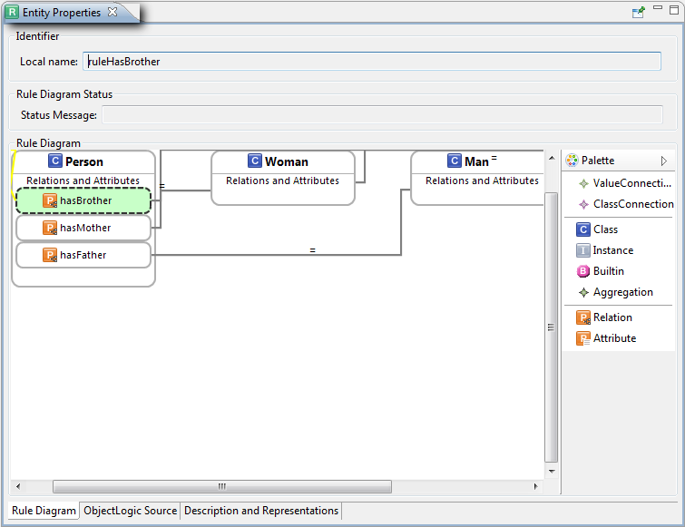
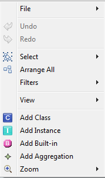
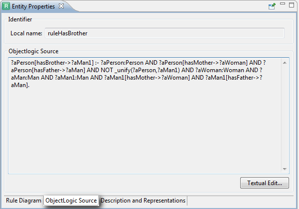
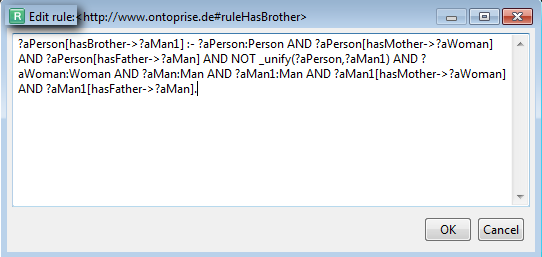

|

|
|
Entity Properties View Overview |
|
|
|
|
Entity Properties View Overview |
On the Entity Properties tab you can edit all of the properties for an element selected from the navigation tree. Selecting a rule in the navigator will open a property page as shown below. This chapter describes the tabs of the Entity Properties View.
Rule Diagram
Rule Diagram (Graphical Rule Editor)
Here you can formulate rules in a graphical way. The chosen rule will be displayed together with a name, a namespace and a rule diagram. If the rule contains language constructs that are not supported by the Graphical Rule Editor, the diagram will be empty and disabled.

Make a right mouse click to display the following context menu:

There are four possible ways of creating a class in the Graphical Rule Editor:
| • | Using drag and drop. Use drag and drop to drag classes into the Rule Diagram. The class will appear in the Entity Property window. |
| • | Using the Context menu. Make a right mouse click anywhere in the Rule Diagram to display a context menu. Then select Add Class (see above). |
| • | Using the Tooltip menu. Move the cursor across the Rule diagram to activate the tooltip menu, then click on the Class icon (Add Class). |
| • | Using the Palette menu. Click on Class in the Palette menu, then make a left click on the Rule Diagram. |
Rule Diagram Status
If a rule diagram contains errors, they will be shown in the status line, but warnings will be shown within the diagram, marked with a warning symbol.
Possible common errors:
| • | No HEAD/BODY |
| • | Aggregation cycle |
| • | Aggregation value or result parameters are not connected |
| • | Compile errors (example in the first screenshot) |
Possible common warnings:
| • | New rule (not shown in the diagram) |
| • | An element (class, instance, attribute) does not exist |
| • | A connection of two possibly incompatible types (example in the second screenshot) |
ObjectLogic Source
In this tab you can see the textual ObjectLogic representation of your rule:

You can edit your rule in a textual editor. To open this editor, click on Textual Edit..., which is in the bottom right hand corner of the ObjectLogic Source tab.

Comments & Labels
See chapter Adding Comments and Labels.